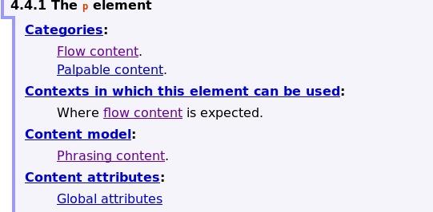
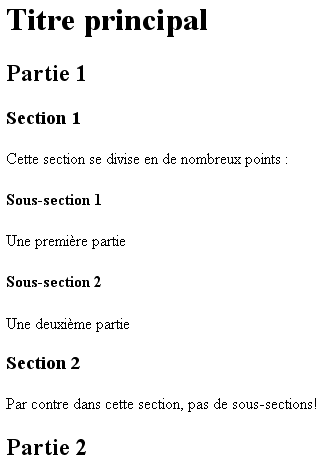
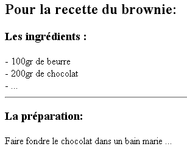

Introduction :
Dans cette rubrique, nous précisons quelques points théoriques. Nous parlerons de la nouvelle catégorisation des éléments en HTML5, ensuite nous détaillerons les éléments HTML5 les plus courants.
Dans cette rubrique, nous précisons quelques points théoriques. Nous parlerons de la nouvelle catégorisation des éléments en HTML5, ensuite nous détaillerons les éléments HTML5 les plus courants.
Les balises de structure sont des balises qui permettent de structurer le texte en paragraphe, bloc, titre, ... mais aussi citation ou mise en évidence. Par exemple, <h3> est une balise de structure qui permet de préciser un titre de niveau 3.
Lorsqu'on produit un document (une revue, un livre, un catalogue, ...), on veille toujours à sa structure, c'est-à-dire aux différentes parties qui le composent. On distingue des paragraphes, des citations, des titres, ... Imaginez-vous lire un texte sans aucune structure (ni chapitre, ni paragraphe), vous abandonneriez rapidement la lecture, noyé dans le flux monotone du texte. Ou encore, imaginez un syllabus ne contenant que du texte en continu sans aucun titre ou section !
Structure le contenu permet de mettre en évidence les concepts absordés et de faciliter la tâche du lecteur.
Pour rappel, un élément en HTML est constitué d'une balise ouvrante + un contenu + une balise fermante.
Il existe des éléments en HTML qui ne possèdent pas de balise fermante; il s'agit des éléments vides. On parle d'élément vide parce que celui-ci n'a aucun contenu lié. Il s'agit d'abréviation autorisée par le HTML permettant de diminuer la quantité de balisage.
br (de l'anglais break) est un exemple d'élément vide : il permet de faire un passage à la ligne suivante. Vous pouvez donc utiliser cette balise pour passer à la ligne.

N'abusez pas de la balise <br> ! Trop de <br> vont nuire à la lisibilité du code. De plus, je rappelle que la mise en forme se fait avec du CSS.
Par conséquent une suite de <br> est souvent une indication d'un manque de CSS ou d'une mauvaise structure HTML.
Les éléments HTML peuvent spécifier un attribut id et (ou) class. Ces attributs sont quasiment identiques; ils permettent notamment la mise en forme via le CSS.
L'attribut class peut être mis sur n'importe quelle balise et permettra à plusieurs éléments au sein d'une page d'appartenir à la même classe. Avec le CSS, ces éléments auront le même rendu.
La valeur de l'attribut id par contre doit être unique dans une page HTML. Cela permet de référencer un élément précis dans une page.
Un saut de ligne correspond à un passage à la ligne suivante qui intervient lorsqu'on appuie sur la touche "enter" du clavier. Un navigateur n'affiche pas les sauts de lignes des fichiers HTML ni les lignes vides ou tabulation; il prend le texte qui se trouve dans le corps du document et l'affiche à l'écran sans en tenir compte. Il remplit tout l'espace de la fenêtre en s'alignant le plus à gauche et plus à droite possible, puis passe à la ligne suivante. Redimensionnez la fenêtre du navigateur et constatez que le texte se replace de manière à remplir l'espace disponible, cela prouve bien toute la souplesse du HTML. Il convient donc d'introduire grâce aux éléments du langage HTML les espaces, sauts de ligne ou tabulations en utilisant des éléments de type bloc.
En HTML, on peut insérer des éléments les uns dans les autres, on parle d'imbrication. Dans le chapitre précédent (HTML - Les bases), nous avons abordé la structure de base d'une page HTML/ Dessiner le système d'imbrication des éléments d'une page Web revient à dessiner un arbre généalogique, comme montré dans le schéma ci-contre. Au sommet se trouvent les arrières grands-parents puis en-dessous leurs enfants et petits-enfants, etc.
Dans le schéma ci-contre, on comprend que l'élément html se trouve toujours à la racine de l'arbre et possède deux éléments imbriqués, ses deux endants : head et body. L'élement title est imbriqué dans l'élément head.
Il faut toujours veiller à ce que les balises ne soient pas dépareillées, c'est-à-dire que les imbrications ne se chevauchent pas. Effectivement, si votre page HTML possède des balises dépareill&es, les navigateurs web afficheront des choses erronées ! Pour savoir si une balise peut être imbriquée ou pas dans une autre balise, vous pouvez utiliser le site "Can I Include".
Voici un mauvais exemple : <p><em>HTML</p> est le cours le plus cool.</em>. Effectivement, il faut d'abord fermer l'élément em avant de placer la balise </p>.
Avant HTML5, on distinguait 2 types de balises de structure : le type en ligne ou bloc. Les balises "bloc" pouvaient contenir des balises "bloc" et des balises "en ligne" tandis que les balises "en ligne" ne pouvaient contenir QUE d'autres balises "en ligne". On ne pouvait pas par exemple mettre un paragraphe (type block) dans un lien (type en ligne). Ces limitations, HTML5 a voulu les balayer. C'est pourquoi une nouvelle manière de catégoriser les éléments est apparue.
Il est à noterque l'on parle toujours de balises en ligne et en bloc en HTML5. On parle alors du rendu et non pas de catégorie. En effet, les balises en ligne s'afficheront les unes à côté des autres (sur une ligne) tanddis que les balises en bloc s'afficheront les unes en dessous des autres. Chaque balise HTML a un rendu par défaut (en ligne ou en bloc) mais nous verrons que nous pouvons facilement grâce au CSS.
Voici la nouvelle catégorisation des éléments en HTML5 :

Vous devez simplement retenir qu'un élément HTML fait partie d'un ou plusieurs de ces catégories. L'objectif de ces catégories est de rassembler les balises ayant des caractéristiques similaires notamment les balises enfants qu'elles peuvent contenir. Un exemple : la balise p représentant un paragraphe fait partie de la catégorie FlowContent mais aussi de PhrasingContent et ne pourra contenir que des éléments faisant partie de la catégorie PhrasingContent. De manière générale, les balises faisant partie du PhrasingContent ne pourront contenir que des balises PhrasingContent. Cependant, des exceptions existent et il serait fastidieux de tout énoncer ici. Je vais donc vous détailler dans le paragraphe suivant la technique à employer pour s'assurer d'imbriquer correctement les bons éléments HTML.
Premièrement, sachez que le validateur HTML vous indiqura si vous avez des erreurs d'imbrications.
Deuxièmement, vous pouvez savoir une balise peut s'imbriquer ou non dans une autre balise grâce au site "Can I Include".
Troisièmement, grâce à ce lien pointant vers la norme HTML5 du site du W3C, vous pourrez voir les différentes catégories. En cliquant sur une catégorie, vous verrez les différents éléments qui la compose et surtout, en cliquant sur un élément, vous verrez le content model, autrement dit les éléments ou la catégorie d'éléments que l'élément HTML choisi peut contenir. Essayez avec l'exemple de la balise p.
En HTML, la plupart des balises ont une sémantique qui leur est associée. Un élément sémantique est un élément auquel on attache une signification. Par exemple, l'élément <header> contiendra l'en-tête (bannière, logo, menu) d'une page HTML. Il y a plusieurs avantages à utiliser ces balises sémantiques notamment le fait qu'elles rendent le code plus clair. En HTML5, de nouveaux éléments sémantiques ont donc été introduits. Ils sont décrits ci-dessous. On comprend beaucoup plus facilement ce que l'on va trouver dans une balise <header> plutôt que <div>. Elles permettent également aux robots pour traiter plus efficacemnt l'indexation d'un site web.
Il est bien évident qu'il faut respecter le rôle de ces balises sémantiques pour garder l'accessibilité.
Deux balises sans rôle particulier ont également été créées : <div>et <span>. Elles sont censées être utilisées quand aucun rôle particulier n'est requis. Malheureusement, ces balises qui devaient être rares sont devenues les plus utilisées, en particulier la balise <div> pour structurer la page en différents.
Utilisez donc toujours un élément sémantique plutôt qu'un élément générique quand cela est approprié !
La balise <main> doit être unique dans une page afin d'indiquer clairement le contenu principal de la page sans les éléments du site annexes, comme la zone d'en-tête, de navigation...
Les autres balises peuvent être présentes plusieurs fois et imbriquées les unes dans les autres. Ainsi, il est possible d'avoir la structure suivante :
<header>
En-tête de la page
</header>
<main>
<article>
<header>
En-tête de l'article
</header>
<p> ... </p>
</article>
</main>
<footer>
...
</footer>Dans cet exemple, la première balise <header> permet de définir l'en-tête de la page alors que la seconde permet de définir l'en-tête de l'article.
L'élément <header> constitue l'en-tête (bannière, logo, menu) de la page HTML. Il est souvent commun à toutes les pages d'un site web.
L'élément <footer> constitue le pied de la page HTML. Il peut être constitué de coordonnées, d'un copyright, ... Il est souvent commun à toutes les pages d'un site web.
L'élément <nav> contient la liste des liens utiles à la navigation vers les différentes pages du site web. C'est dans cette balise qu'il faut inclure le(s) menu(s). Il peut être placé dans le <header> ou directement dans l'élément <body>. Plusieurs balises <nav> peuvent être présentes sur un site si vous avez par exemple un menu et un sous-menu.
Pour diviser un élément en sections bien déterminées, on utilise la balise <section> ou la balise <article>. Ces deux divisions de texte représentent une portion de texte indépendante (qui peut contenir des titres, des paragraphes, ...) comme un article de journal par exemple. On discute beaucoup au sujet de l'imbrication de ces deux balises l'une dans l'autre. Retenez tout simplement que l'imbrication est possible dans les deux sens.
La balise <p> indique le début d'un paragraphe et </p> termine le paragraphe. Lorsque le navigateur rencontre un nouveau paragraphe (c'est-à-dire <p>), il insère une ligne vide ainsi qu'un peu d'espace vertical avant de débuter un nouveau paragraphe.
L'exemple suivant illustre ces propos :
| Le code de la page HTML : | L'affichage par le navigateur : |
|---|---|
|
Lili,take another walk out of your fake world please put all the drugs out of your hand you'll see that you can breath without not back up some much stuff you got to understand for every step in any walk any town of any thought i'll be your guide for every street of any scene any place you've never been i'll be your guide. Lili,take another walk out of your fake world please put all the drugs out of your hand you'll see that you can breath without not back up some much stuff you got to understand for every step in any walk any town of any thought i'll be your guide for every street of any scene any place you've never been i'll be your guide. |
Un paragraphe peut contenir n'importe quel élément permis dans un flux de texte (c'est-à-dire élément de type en ligne) comme par exemple img. Quand un élément de type bloc intervient dans un paragraphe, le navigateur considère le paragraphe comme terminé (c'est-à-dire s'il ajoutait la balise </p>).
On peut spécifier un certain nombre d'attributs dans la balise <p>. Néanmoins, ces attributs prendront tout leur sens que lorsqu'on introduira le CSS. Énumérons quand même quelques-uns d'entre eux :
Il est également possible de structurer le document au moyen d'éléments de type titre. Effectement, des balises <h1> ... <h6> (head en anglais) permettent de définir des titres. Les titres séparent les passages de texte et véhiculent aussi visuellement une signification. Il existe 6 niveaux : l'élément <h1> représente le titre de plus haut niveau, <h2> représente le titre de niveau juste inférieur, etc. Le texte qui se trouve, par exemple, à l'intérieur des balises (par exemple : <h1>le titre premier</h1>) constitue le vrai contenu du titre de niveau 1 ("le titre premier" dans l'exemple). Par défaut, c'est-à-dire sans feuille de style précisée, le navigateur affiche leur contenu de la plus grande à la plus petite taille de caractères, en gras la plupart du temps. Le texte de l'élément h4 est de la même taile de caractères que le texte normal (du reste du document).
Les balises de titre cassent le flux de texte, le titre est isolé sur une ligne, séparé du reste du texte. Il s'agit bien d'un élément de type bloc.
Un titre peut contenir n'importe quel élément autorisé dans un texte (c'est-à-dire élément de type en ligne) comme par exemple img ou encore a.
On peut garnir les éléments de type titre d'un certain nombre d'attributs (id, class et title) ayant la même signification que pour <p> et <div>.
Voici un exemple d'utilisation des balises de titre :
| Le code de la page HTML : | L'affichage par le navigateur : |
|---|---|
<h1>Titre principal</h1> <h2>Partie 1</h2> <h3>Section 1</h3> Cette section se divise en de nombreux points : <h4>Sous-section 1</h4> Une première partie <h4>Sous-section 2</h4> Une deuxième partie <h3>Section 2</h3> <h2>Partie 2</h2> |
 |
Le bloc de citation estun passage de texte extrait d'un autre document. La balise <blockquote> permet de définir le début de l'extrait et </blockquotes>, la fin. Les navigateurs affichent généralement le bloc de citation dans un paragraphe isolé avec une indentation particulière (en italique, entre guillemets ou avec indentation). Il existe un élément similaire de type en ligne pour les citations plus courtes : <q> (détaillé ci-après).
On peut garnir l'élément blockquote avec des attributs id, class et title mais aussi de l'attribut :
Voici un exemple de citation :
| Le code de la page HTML : | L'affichage par le navigateur : |
|---|---|
|
Citer les ots de quelqu'un, c'est mettre sous verre une collection de beaux papillons qui ont perdu leur lumière et leur éclat.O. Wilde |
On peut intégrer des éléments de type bloc dans un élément blockquote.
Parfois, il est nécessaire d'imposer au navigateur d'afficher un texte tel quel avec des indentations, des alignements, etc. <pre> permet l'affichage d'un texte exactement comme il a été tapé dans l'éditeur y compris les retours à la ligne, les espaces et les lignes vides. On utilise souvent la balise de mise en forme <pre> quand l'intégrité des colonnes et des rangées de caractères doit être conservée. L'usage le plus fréquent est l'affichage de code informatique comme le montre l'exemple qui suit.
| Le code de la page HTML : | L'affichage par le navigateur : |
|---|---|
|
public class Somme Impl {
public int calculateSomme(int n1, int n2) {
return n1 + n2;
}
}
|
Les balises qui produisent une coupure dans le flux du texte (les titres, <p> ou <div>) ne doivent pas être utilisées dans l'élément pre.
On peut garnir l'élément pre des attributs id, class, title ayant la même signification que pour <p> et <div>
Il est également possible d'insérer des lignes horizontales pour délimiter et séparer certaines sections d'un document. <hr> permet effectivement d'insérer une ligne sur toute la largeur de la fenêtre afin de casser le flux de texte. hr est un élément vide, c'est-à-dire qui ne possède pas de contenu.
Voici un exemple :
| Le code de la page HTML : | L'affichage par le navigateur : |
|---|---|
|
 |
Pour créer une liste en HTML, on a besoin de deux éléments. Le premier élément permet de baliser chaque item de la liste. Le second détermine le genre de liste qu'on établit.
L'élément qui délimite les items de la liste est li. Pour définir le genre de liste, on utilise trois balises : <ol> (ordered list), <ul> (unordered list) et <dl> (definition list).
Les listes sont des éléments de type bloc précédées d'un marquer : une puce pour les listes non-ordonnées et un numéro pour les listes ordonnées. Une liste ordonnée (ol) est une liste dans laquelle chaque item est numéroté tandis que, dans une liste non-ordonnée (ul), les items sont énumérés (avec des puces, boules, ...).
Une liste de définitions permet de mettre en évidence un mot pour chaque item de la liste. Pour intégrer une liste de définition dans une page HTML, on n'utilise pas la balise <li> comme pour les autres listes mais les éléments : dl, dt (definition title) et dd (definition description).
Voici quelques exemples :
| Le code de la page HTML : | L'affichage par le navigateur : |
|---|---|
|
|
|
|
|
|
Avec les feuilles de style, vous verrez qu'il est possible de modifier le type des puces, le type de numérotation ou encore modifier l'image de la puce dans une liste (voir le chapitre sur le CSS).
La balise <br> ou <br/> (selon le standard employé) effectue un retour à la ligne du texte. <br> vient de l'anglais break, coupure de ligne en français.
L'élement br ne possède pas de balise fermante en HTML5 contrairement aux autres éléments HTML; il s'agit d'un élément vide. Effectivement, <br> permet d'effectuer un saut de ligne; il n'a pas été conçu pour avoir de contenu. En toute logique, on aurait eu un élément composé des balises <br> et </br> mais, n'ayant aucun contenu à indiquer, cela s'avérait inutile.
On peut améliorer la présentation de l'exemple présenté plus haut :
| Le code de la page HTML : | L'affichage par le navigateur : |
|---|---|
|
Lili,take another walk out of your fake world please put all the drugs out of your hand you'll see that you can breath without not back up some much stuff you got to understand |
|
Lili,take another walk out of your fake world |
On peut garnir l'élément br des attributs id, class et title ayant la même signification que pour p et div.
Attention cependant, si vous avez plusieurs balises <br> les unes à la suite des autres, vous avez soit un problème de structuration HTML ou vos règles CSS doivent être modifiées.
L'élément q est utilisé pour des citations courtes. Il est similaire à l'élément bloc blockquote car il permet également de baliser des citations mais plus courtes. Une citation en ligne est entourée de texte normal et s'affiche entre guillemets dans le suivi normal du flux de texte.
<q> dispose également des attributs cite, id et class.
Voici un exemple :
| Le code de la page HTML : | L'affichage par le navigateur |
|---|---|
|
Comme on dit : |
La balise <em> permet de dire au navigateur qu'il doit mettre l'emphase sur le texte. La plupart du temps, il s'agit d'afficher le texte en italique mais on peut décider de marquer autrement l'emphase via une feuille de style. Dans ce syllabus, l'emphase est marquée par un agrandissement du texte et un changement de couleur (orange).
Voici un exemple :
| Le code de la page HTML : | L'affichage par le navigateur : |
|---|---|
|
Il faut placer un bon nombre d'emphases dans un texte; ni trop ni trop peu. |
En HTML4, les éléments sémantiques <section> et <article> n'existait pas, les sections d'une page HTML étaient alors divisées grâce à l'élément générique div. Cet élément en HTML5 a perdu de son utilité, cependant il peut encore être employé pour réaliser des divisions où on ne trouve pas un élément sémantique approprié.
On peut l'utiliser pour structurer le texte mais on ne perçoit son intérêt que lorsqu'on y ajoute des attributs d'identification (id, class et title) pour la mise en forme du document. En d'autres termes, il faut attendre d'avoir abordé les feuilles de style (CSS) pour comprendre les attributs de <div> énoncés ci-après.
L'élément span délimite simplement une partie de contenu. On peut préciser les attributs id ou class d'un élément em.
La balise <span> est utile lorsqu'on décide d'appliquer un style sur une partie de texte (voir les feuilles de styles, CSS) ou de déterminer une ancre (voir les liens hypertextes).
Avant l'aparition de ces balises sémantiques, il était possible de donnr un rôle à une balise en utilisant l'attribut WAI-ARIA (Web Accessibility Initiative-Accessible Rixh Internet Applications) role. Les balises sémantiques possèdent un rôle directement associé. Néanmoins, il est possible d'ajouter cet attribut aux balises sémantiques d'HTML5 pour rendre la page compatible avec les anciens navigateurs et les anciennes technologies d'assistance. Ainsi, le RGAA vous invite à associer à quatre balises leur rôle :
<header role="banner">
<nav role="navigation">
<main role="main">
<footer role="contentinfo">À l'exception du rôle navigation, qui peut être utilisé plusieurs fois pour le menu principal et les menus secondaires, les autres doivent être uniques dans la page.
Les autres balises sémantiques possèdent également un rôle associé. Néanmoins, elles ne sont pas nécessaires pour le RGAA, car elles n'apportent rien en termes d'accessibilité :
<aside role="complementary">
<section role="region">
<article role="article>Il existe s'autres rôles qu'il est important de positionner pour rendre un site accessible : le rôle search sur l'accès au moteur de recherche dans les pages du site et le rôle form sur les formulaires.